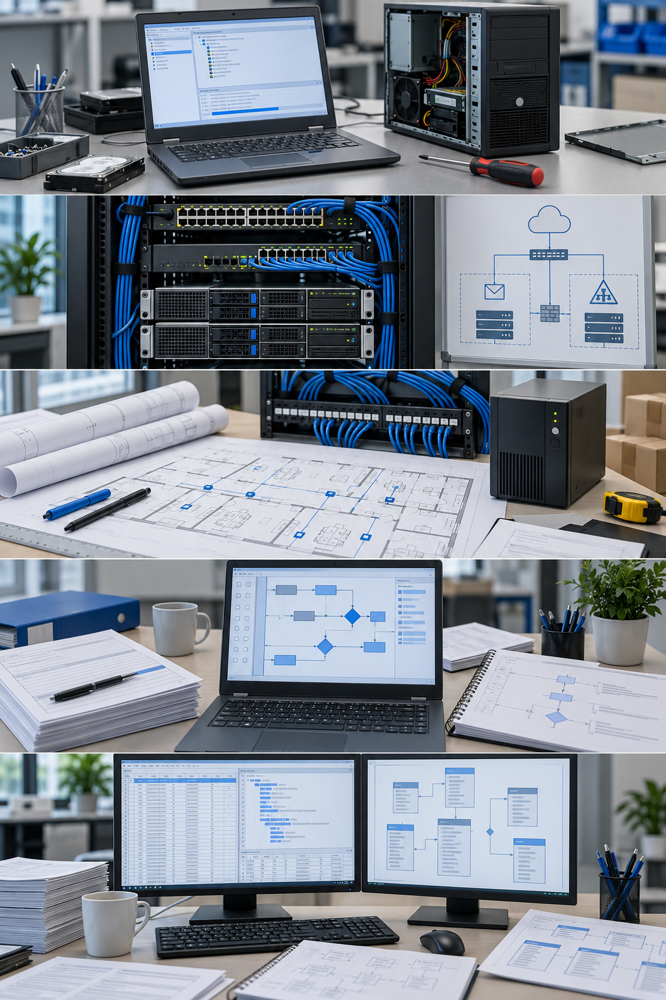
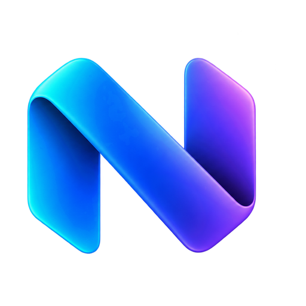
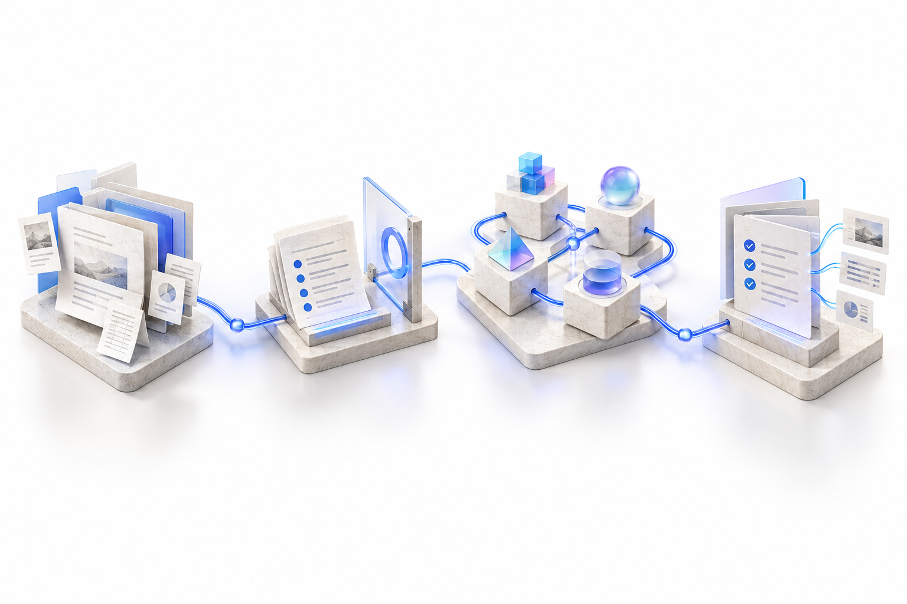
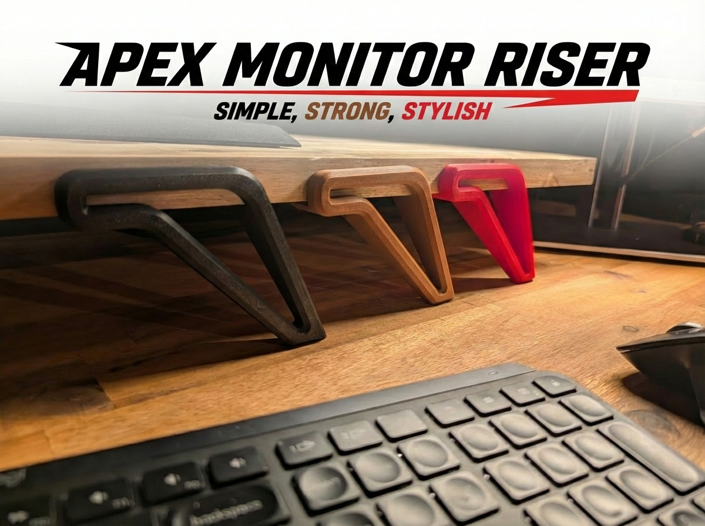
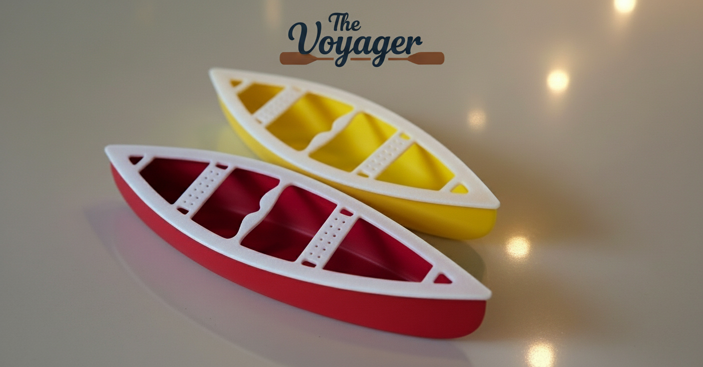

Dell · 2006 · Latitude / OptiPlex support
Start with the real problem.
Latitude and OptiPlex support on Dell's Gloves Off team. Time to understand the fault, resolve the issue on the first call and reduce callbacks.
CAREER JOURNEY · TECHNICAL DEPTH · BUSINESS IMPACT
From diagnosing hardware to designing enterprise solutions, I’ve spent 20 years connecting technology, systems and people — including 18 years in insurance. Today, I bring that foundation to cloud architecture, automation and AI.
Each new responsibility builds on what came before. Support became systems. Systems became insurance integrations. Today, that foundation shapes how I approach solutions.
Illustrative scenes. Mobile starts still; play any scene to explore it.

Dell · 2006 · Latitude / OptiPlex support
Latitude and OptiPlex support on Dell's Gloves Off team. Time to understand the fault, resolve the issue on the first call and reduce callbacks.
Harris · 2007–2009 · NOC and infrastructure projects
From NOC work to racks, networks, identity and email. Repeatable Small Business Server swing migrations made the relationships between services impossible to ignore.
Grenville · within 2009–2022 · overlapping work
A headquarters is more than a network diagram. I worked from technical design through the build and move, connecting physical constraints with what the business needed to operate.
Operational dependencies became a practical foundation for analysis and design: understand what needs to keep working while something changes.
Grenville · business rules, broker workflows and integration
Bring business meaning across the interface. I designed and implemented policy rules and worked through broker requirements, payload mappings and integration failures.
Current professional work · Medavie · 2022–present
Understand the current state. Shape the change. My work connects provider/B2B integration requirements, claims-data transitions and the reporting detail that helps a solution hold together.
The modern reporting exchange remains a proposal; continuity mapping is completed analysis/design. Current work continues alongside the independent builds below.
NEXUS brings the career foundation together: business context, system boundaries, deliberate execution and evidence. My independent capstone keeps me close to implementation while the professional work continues.

Scoped context, explainable routing and recoverable execution. An AI-assisted work system in active development.
Run NEXUS run.nexus (opens in a new tab)Capstone case studyProfessional work continues at Medavie. NEXUS grows alongside it as my capstone.
Support, systems, infrastructure, analysis and solution design: overlapping chapters that build toward architectural work.
2006–2009
Technical support / NOC & project technician
I joined Dell in September 2006, supporting Latitude laptops and OptiPlex desktops on the ‘Gloves Off’ team. We could spend more time with a client to resolve the issue on the first call and reduce callbacks. At Harris, that support foundation grew into NOC work, complete rack installations and migrations across connected services. I learned to follow the real problem across hardware, networks, identity and email—and to make the process repeatable.
Career evidence: Josh’s first-person account, supported by the earlier career résumés. No resolution-rate metric is asserted.
At Dell, first-call resolution and fewer callbacks mattered more than optimizing each call’s duration. At Harris, I installed, updated and replaced NOC nodes, handled password/email resets and desktop/laptop support, then worked on client rack installations and Harris’s own firewalls, switches and servers. Exchange, BlackBerry Enterprise Server, Active Directory groups and Group Policy were part of that connected environment. I later moved to Grenville because I wanted to focus on one company.
2009–2022
Systems / network administration
At Grenville, I took headquarters technical infrastructure from design through the build and move, accounting for networking, AV, security, cooling and resilient power. I am proud of the smooth transition. The broader infrastructure work also included moving a bare-metal blade centre to ESXi. As a network administrator colleague took more daily operations, I moved toward projects and analysis, carrying forward a practical understanding of the dependencies that make a design work in real life.
Professional evidence: infrastructure planning and virtualization work; no internal diagrams published.
This chapter connects solution design with physical constraints, operational dependencies and hands-on implementation.
2010s–2022
Analysis, business rules and development · overlapping responsibilities
At Grenville, I personally designed and implemented P&C rating and underwriting rules. I connected that work to broker inquiry, new business, quoting and policy changes—diagnosing requests, testing integrations and directing UI changes to capture missing risk information. I helped shape messages that let users correct issues, refer for review or bind where allowed. Renewal automation sharpened the same principle: classify eligible standard cases, while preserving a clear path for human judgment.
Evidence: Josh’s first-person account and prior career sources. Rules architecture is a responsibility, not an invented formal title.
Broker desktop clients used SOAP/XML requests; the backend later used REST. TAM and Epic integrations worked through Bravado/Bravado1. I mapped and transformed fields and values across CSIO/ACORD payloads and proprietary backend fields. Toward the end of Grenville, I performed current/future-state analysis and wrote specifications for a planned restructuring of policy administration, business classes and organization. This was analysis/design work, not a delivered replacement platform.
2022–present
Functional analyst / claims architecture work
At Medavie, I work across the detail of claims systems and the design of change. That includes provider-integration requirements, an Excel tool that turns inconsistent takeover history into validated XML, and hand-written SQL and financial report reconciliation. A supposed reporting assignment turned out to be a daily ETL integration. Understanding that distinction shaped the continuity mapping and the modernization proposal. The recurring question is practical: what has to keep working while the system changes?
Evidence: current first-person account, supported by earlier career sources. Delivered tooling, completed analysis and open proposals are distinguished in the case studies.
The reporting continuity mapping is analysis/design; the modern Power BI or alternative exchange remains a proposal. The provider-registry case confirms solution review, mappings and scheduled synchronization requirements. Frontend-replacement details stay in draft until their exact scope is confirmed. Employer financial totals, private schemas and claim data are omitted.
TodayIndependent projects
Hands-on software and systems design
Independent projects give me room to work directly with new tools and practical constraints. NEXUS applies my systems experience to AI-assisted work with context, control and evidence. These projects keep the feedback loop close: build something, inspect how it behaves, and use what I learn to shape the next iteration.
Evidence: implemented NEXUS software mechanisms; the broader product remains in active development.
NEXUS remains in active development. Project studies distinguish implemented mechanisms from the broader product vision.
Each chapter adds to the foundation.
Professional stories first, then the independent builds that keep me learning.
From a hardware fault to an insurance rule or a claims-data transition, the scope has grown. These stories show the decisions, implementation and lessons that connect the work.
Periods are approximate where project dates are not established. At Grenville (2009–2022), infrastructure, analysis and development overlapped; each new responsibility built on what came before.
September 2006 · early careerDell
A hardware fault is disruptive enough without asking the client to keep calling back. On Dell’s Gloves Off team, we could spend more time working through the issue instead of optimizing each call’s duration.
Latitude / OptiPlex hardware support
Read the case study2007–2009Harris
Customers were outgrowing Microsoft Small Business Server, where Exchange and Active Directory roles shared a combined environment. Moving to separated infrastructure required careful handling of data, email and identity dependencies.
NOC / project technician
Read the case studyApproximately 2014Grenville
A headquarters move brings networking, AV, security, cooling and resilient power into one physical environment. The technical plan also has to support the build, move and operational transition.
Systems administration / technical design contributor
Read the case studyWithin 2009–2022 · overlapping workGrenville
A broker inquiry needs to return information that is useful in the broker’s own workflow. Policy, billing and claims information crosses system boundaries, and the meaning of the fields has to survive the exchange.
Business analysis, mappings and integration testing
Read the case study2010 onward · overlapping workGrenville
A new-business workflow cannot rate or underwrite a risk properly if the interface does not collect the information the rules need. Auto and residential submissions had to connect broker inputs, validation and the insurance decision.
Requirements, UI specifications and hands-on rules implementation
Read the case study2010 onward · overlapping workGrenville
Early commercial quoting and broker new-business workflows needed the right risk information, consistent insurance meaning and useful decisions. Inquiry, upload and download flows crossed broker payloads, proprietary backend fields and interfaces that had to be diagnosed and tested.
Policy rules design and implementation; analysis and integration contribution
Read the case studyWithin Grenville tenure · 2009–2022Grenville
A policy change can alter risk and rating in ways that differ from new business or renewal. Users needed to understand what they were changing before submission, and the system needed to validate those changes in the correct business context.
Analysis, policy rules implementation and UI/integration design
Read the case studyWithin Grenville tenure · 2009–2022Grenville
Standard policies could be eligible for automatic renewal, while exceptions still required insurance judgment. The challenge was to make that classification explicit without treating every policy as suitable for automation.
Framework design and hands-on rating/underwriting rules implementation
Read the case study2013–2018 source range · approximately 2018Grenville
External insurance adjuster users needed an authenticated way to submit supporting documents and images directly into policy-management records. Ad-hoc email delivery left the workflow fragmented; the goal was a controlled submission path tied to the backend record.
Systems analyst / hands-on developer and integration contributor
Read the case study2022–present · parallel workstreamsMedavie
Provider integration needs the information required for adjudication, with clear requirements and mappings across source and consumer systems.
Functional analyst, working alongside architects and delivery teams
Read the case study2022–present · project date not establishedMedavie
When a group changes insurers, its prior claim history needs to inform benefit and limit adjudication. The history arrives in inconsistent spreadsheets or data derived from PDFs, while the receiving adjudication system expects a defined XML structure.
Excel tooling, validation and data transformation
Read the case study2022–present · overlapping migration workMedavie
I was assigned what sounded like a Power BI report. Looking at the real process, I recognized a daily flat-file ETL integration through legacy COBOL/Interblue, feeding a client’s Cognos reporting. The migration question was how to preserve that contract as adjudication data moved to the new system.
Current-state analysis and continuity mapping design
Read the case study2022–present · overlapping reporting workMedavie
Claims reporting has to make sense against the financial reporting it feeds. While the extract and modernization decision remained open, the immediate work still needed an understanding of report logic and a way to reconcile the claims information.
Hands-on SQL, financial report logic and reconciliation
Read the case studyThe same curiosity, with a closer build-and-learn loop.

Active development
Context, decisions and execution, connected.
An AI-assisted work system with scoped context, explainable model routing, evaluation and recoverable execution.
TypeScript · React/Vite · PostgreSQL · Redis
Inside NEXUSI like understanding how things fit together—and getting into the details that make them work.
I started in hardware support at Dell, where we had time to work through a client’s problem. At Harris, the scope grew from NOC work to racks, networks, identity and email migrations. I moved to Grenville because I wanted to focus on one company, and the work grew with me: headquarters infrastructure, insurance rules, broker integrations and hands-on development.
At Medavie, I bring that foundation into claims analysis, integration requirements, data transitions and reporting. I still like getting into the implementation: building an Excel tool, writing SQL or tracing an interface failure. That detail helps me see what a solution will ask of the people and systems around it.
I am interested in technical solutions architecture and forward-deployed work because they bring those perspectives together: understand the problem, design the change and stay close enough to the implementation to learn from it. Outside work, NEXUS keeps that build-and-learn loop going.
Away from the screen: Workshop42 (opens in a new tab).
See what I’m buildingThis private prototype includes a career overview. A tailored résumé download has not been attached yet.
AI-assisted work with context,
control and a trail of evidence.
Active development
Useful AI-assisted work needs more than a prompt. It needs the right context, explicit decisions, constrained execution and a way to inspect what happened.
Scoped context compilation brings together retrieval, project decisions, graph relationships and source receipts.
Constraint-aware model routing makes the selection inspectable, with plans separated from review and execution.
Distributed Node execution uses durable commands and permissions so work can recover across process boundaries.
Deterministic and semantic evaluation, plus integration and deployment receipts, make outcomes available for review.
A headless TypeScript core, React/Vite web interface, PostgreSQL and Redis, with OpenAPI and WebSockets.
This study describes implemented mechanisms. NEXUS is in active development; the broader product vision is still evolving.
Your voice, where you already write.
Local speech inference · Windows / Android
Connect local speech recognition to everyday input: native text entry on Windows and a dedicated Android keyboard.
AudioWorklet capture and a dedicated Rust worker support the Windows flow, with Silero phrase detection.
Cached speech models run through sherpa-onnx / Parakeet. The application connects the result to native input.
Optional local correction, dictionaries and fallback behavior support the input workflow.
React / TypeScript, Rust / Tauri 2, sherpa-onnx / Parakeet, and a Kotlin Android IME. Cached model variants include 110M CTC and 0.6B v3 TDT INT8.
Source review found local decoding and no first-party audio-upload client. That review was not a network audit. No numerical speed benchmark or universal device-support claim is made here.
Make it tangible.
Selected physical projects, photographed as built.

Printed legs meet a wooden shelf. A practical desktop object shaped around structure, space and everyday use.
View Apex on MakerWorld (opens in a new tab)
A dual-color printed canoe model. A small exploration of shape, construction and the pleasure of making.
View Voyager on MakerWorld (opens in a new tab)Dell · September 2006 · early career
Latitude / OptiPlex hardware support
A hardware fault is disruptive enough without asking the client to keep calling back. On Dell’s Gloves Off team, we could spend more time working through the issue instead of optimizing each call’s duration.
I supported Latitude laptops and OptiPlex desktops. The team’s approach gave me room to investigate with the client and aim to resolve the issue on the first call. The useful work was to understand the symptom and the hardware involved, then explain the next steps clearly.
Spend enough time to work through the problem and reduce callbacks. Keep the person affected by the fault in view alongside the technical diagnosis.
The team’s approach was to spend enough time with a client to resolve the issue on the first call and reduce callbacks. This describes the support model I worked within; a numerical resolution rate is not established.
Latitude laptops · OptiPlex desktops · Hardware troubleshooting · Client communication
Josh’s first-person account confirms a September2006 start. The later Harris chapter follows the broad résumé-supported career period. No client records or numerical first-call-resolution result are included.
Harris · 2007–2009
NOC / project technician
Infrastructure changes touch several connected services. A server or network migration also affects email, directories and the people who depend on them.
Started with NOC node installation, updates and replacements, plus corporate password/email resets and desktop/laptop support. Progressed to full rack installations, switches, firewalls and servers for clients. Developed a repeatable swing-migration process from Small Business Server to separated infrastructure, with practical attention to preserving data and email. Also supported Harris’s internal firewalls, switches and servers.
Move from combined Exchange and Active Directory roles to separated infrastructure as the customer outgrows the original environment. Keep the data, email and identity dependencies visible through the migration process.
I developed a repeatable swing-migration process for customers moving beyond Small Business Server. Data and email preservation were central to the process, alongside the identity and service dependencies involved. The account does not establish a measured success rate or audited guarantee.
Network operations · Small Business Server · Exchange · Active Directory · Group Policy · BlackBerry Enterprise Server · Rack infrastructure
Josh’s first-person account expands the résumé-supported Harris NOC and infrastructure scope. Client examples include anonymized aeronautics, fitness and power-services businesses; public naming is not confirmed. Dates remain a broad career period.
Public summaries describe the work without publishing employer-confidential artifacts or claiming sole ownership.
Grenville · Approximately 2014
Systems administration / technical design contributor
A headquarters move brings networking, AV, security and resilient power into one physical environment. The infrastructure plan has to account for both technical dependencies and everyday operation.
Designed technical infrastructure from planning through the build and move/transition, accounting for networking, AV, security, cooling and resilient power. Worked through the practical dependencies that connected the plan to the occupied headquarters. The broader infrastructure scope included transitioning a bare-metal blade centre to ESXi; its exact date remains unestablished.
Account for the practical environment, including cooling and resilient power, alongside networking and the systems people use. Carry the dependencies through design, build and the move rather than treating infrastructure as only a server-room concern.
I’m proud of the smooth transition and of taking the technical design through the build and move. The scope connected the infrastructure plan to the occupied building, including cooling, networking, AV, security and resilient power.
Infrastructure planning · Networking · Virtualization · Operational dependencies
Career source material places HQ technical design around 2014. Budget and internal infrastructure artifacts are omitted.
Public summaries describe the work without publishing employer-confidential artifacts or claiming sole ownership.
Grenville · Within 2009–2022 · overlapping work
Business analysis, mappings and integration testing
A broker inquiry needs to return information that is useful in the broker’s own workflow. Policy, billing and claims information crosses system boundaries, and the meaning of the fields has to survive the exchange.
Worked on broker inquiry, including mockups and mappings and downloadable policy, billing and claims PDFs. Diagnosed requests and tested integrations across broker-management vendors. The broader mapping work included field, data and value transformations between CSIO/ACORD payloads and proprietary backend insurance fields.
Treat an inquiry as both a user workflow and a data contract. Trace the request, identify missing or mismatched information, and connect the returned values and documents to what the broker needs to do next. The interfaces included SOAP/XML requests from desktop clients, with REST used in the later backend.
The inquiry workflow included downloadable policy, billing and claims PDFs. My contribution covered mockups, mappings, request diagnosis and integration testing, connecting broker-side requests to the proprietary backend information they needed.
Broker inquiry · Field/value mappings · SOAP / XML · REST · Policy/billing/claims PDFs · Integration testing
Direct Grenville account and prior résumé/portfolio notes. Exact completion dates are not established. The period identifies the employer tenure; documents and policyholder data remain private.
Grenville · 2010 onward · overlapping work
Requirements, UI specifications and hands-on rules implementation
A new-business workflow cannot rate or underwrite a risk properly if the interface does not collect the information the rules need. Auto and residential submissions had to connect broker inputs, validation and the insurance decision.
Personally designed and implemented P&C rating and underwriting rules. Diagnosed broker requests, tested integrations and directed UI/specification changes to collect missing risk information. The work combined requirements and technical guidance with testing and ongoing maintenance.
Make the required risk information explicit, validate it and return a useful next action. I helped design the messaging framework between the rules engine and broker portal so a user could correct an issue, refer the case for review or bind where allowed. The rules needed to distinguish new business from renewals and endorsements.
I implemented rating and underwriting rules and worked through broker requests, validation and missing risk inputs. The submission flow connected those rules to messages that let users correct an issue, refer the case or bind where allowed. The distinction between new business, renewals and endorsements remained part of the rule context.
Auto / residential new business · Rating and underwriting · UI specifications · Validation · Broker integration · Actionable messages
Josh’s direct account expands the earlier source-supported new-business work from2010onward. This describes responsibility and implementation without inventing a formal Architect job title, project volume or universal automation rate.
Grenville · 2010 onward · overlapping work
Policy rules design and implementation; analysis and integration contribution
Early commercial quoting and broker new-business workflows needed the right risk information, consistent insurance meaning and useful decisions. Inquiry, upload and download flows crossed broker payloads, proprietary backend fields and interfaces that had to be diagnosed and tested.
My responsibility was the core policy rules architecture: I personally designed and implemented rating and underwriting rules. Worked with broker-management vendors including TAM and Epic through Bravado/Bravado1. Mapped fields, data and values, and transformed CSIO/ACORD broker payloads into proprietary backend insurance fields across residential, auto, farm and commercial upload/download flows. Diagnosed requests, tested integrations and directed UI/specification changes to collect missing risk information. Implemented validation and rating for auto, residential and commercial new business and quoting.
Helped design a rules-engine-to-broker-portal messaging framework so users could correct issues, refer for review or bind where allowed. Inquiry included downloadable policy, billing and claims PDFs. The mapping work covered upload and download directions, not just a one-way interface. I worked with XML and was familiar with AL3 historical flat-file standards and eDocs.
Early commercial quoting was a substantial part of the work: defining fields and UI stages, mapping values and risk information, specifying behavior and implementing the related rules. I directed changes where the interface did not collect enough information. Vendor teams performed commercial quoting development; my contribution connected the requirements, user workflow, integration mappings and rule implementation.
I implemented the rating, underwriting and validation rules and contributed the fields, mappings and UI specifications that commercial quoting needed. Vendor teams performed commercial quoting development. My work connected the insurance requirements, collected risk information and backend rule decisions across that boundary.
P&C judgment · Commercial quoting · Field/value mapping · CSIO / ACORD payloads · XML · AL3 familiarity · eDocs · SOAP / REST · Rules implementation
Josh’s first-person Grenville account expands the résumé and portfolio-note evidence. “Main policy rules architect” describes responsibility, not a new formal job title. Earlier backend technology and other uncertain vendor names are omitted. Standards are named without asserting their formal relationship; hands-on JSON standards experience is not claimed.
Grenville · Within Grenville tenure · 2009–2022
Analysis, policy rules implementation and UI/integration design
A policy change can alter risk and rating in ways that differ from new business or renewal. Users needed to understand what they were changing before submission, and the system needed to validate those changes in the correct business context.
Worked on a complex policy-change interface that showed changes before submission. Personally designed and implemented policy rules, with validation and rating that distinguished new business, renewals and endorsements. Field/data/value mapping and transformations kept broker payloads aligned with proprietary backend insurance fields. Diagnosed integration requests, tested behavior and directed specification/UI changes where the risk information was incomplete.
Separate the user’s proposed changes from the submitted transaction. Make comparison and validation visible, then return messages that allow correction, referral for human review or binding where the rules permit. Preserve insurance meaning across the broker interface and rule-engine boundary.
The policy-change interface showed the proposed changes before submission. I worked on comparison, mappings, validation and rating rules that treated new business, renewals and endorsements differently, with correction, referral and bind decisions where permitted. The exact completion date is not established.
Endorsements · Insurance analysis · Change comparison · UI design · Validation · Rules implementation
Direct first-person account. The date is the employer tenure, not a claim that this project ran throughout that period. No policyholder data or proprietary rule code is published.
Grenville · Within Grenville tenure · 2009–2022
Framework design and hands-on rating/underwriting rules implementation
Standard policies could be eligible for automatic renewal, while exceptions still required insurance judgment. The challenge was to make that classification explicit without treating every policy as suitable for automation.
Personally designed the renewal framework and implemented rules that classified eligible standard policies for automatic renewal and referred exceptions for human review. The approach distinguished residential, farm/agri and commercial renewal contexts rather than applying one blanket decision to all business.
Automate the eligible standard cases and keep a deliberate referral path for exceptions. Design the classification around renewal-specific rating and underwriting requirements, with human judgment where the rules did not permit automatic processing.
I reached about 80% residential renewal automation, about 40% farm/agri renewal automation and about 60% commercial renewal automation. These are approximate, user-reported outcomes from my account, not independently audited results. They describe renewal automation, with exceptions still going to human review.
Renewal framework · Insurance judgment · Exception classification · Rating rules · Underwriting rules · Human review
Josh’s direct account, with his corrected figures: farm/agri about 40%, commercial about 60%, residential about 80%. Exact project dates are not established; the period shown is Grenville tenure.
Grenville · 2013–2018 source range · approximately 2018
Systems analyst / hands-on developer and integration contributor
External insurance adjuster users needed an authenticated way to submit supporting documents and images directly into policy-management records. Ad-hoc email delivery left the workflow fragmented; the goal was a controlled submission path tied to the backend record.
Built a C#/.NET portal for authenticated submissions, using proprietary backend REST APIs to place documents directly into backend records. The implementation used JavaScript, HTML, CSS and Bootstrap alongside .NET. Added logging for operations and troubleshooting. The workflow handled supporting quotes, images and documents without exposing real files or internal endpoints here.
Replace ad-hoc email delivery with authenticated submission and direct backend record placement. Connect the privacy goal to the actual workflow and add logging so operational issues could be diagnosed. This describes the chosen application workflow, not a claim that all email is inherently insecure.
Built an internal tool to retrieve and search logs, diagnose recurring upload/download problems and guide their resolution. It brought operational troubleshooting alongside the integration workflow rather than leaving repeated failures as isolated support requests.
The application became a production business tool for authenticated submission of supporting documents and images into backend policy records. It replaced ad-hoc email delivery, with operational logging and an internal support tool for recurring upload/download issues. No audited security certification is asserted.
C# / .NET · JavaScript · API integration · Operational logging · Authenticated workflows
Older résumé gives a 2013–2018 range; a later summary places it approximately in 2018. Production use and logging are supported by Josh’s account.
Public summaries describe the work without publishing employer-confidential artifacts or claiming sole ownership.
Medavie · 2022–present · parallel workstreams
Solution review, field mappings and synchronization requirements
I was the solutions person reviewing how ProviderRegistry changes reached the adjudication system. That meant understanding the scheduled jobs, the event records and the REST calls together with the data adjudication actually needed.
A nightly publisher job writes events into a table. A separate scheduled consumer reads those events and calls REST services to pull ProviderRegistry data into the adjudication system. The pattern is scheduled, table-backed publish/subscribe with REST retrieval.
I performed the solution review, confirmed field mappings and synchronization requirements, and connected the source-provider information with adjudication needs. I worked alongside architects and delivery teams, bringing the functional requirements and technical flow into the same review.
My contribution covered solution review/design input, requirements, mappings and synchronization. The account establishes that review work; it does not establish solo implementation or a separate go-live result.
ProviderRegistry · Nightly publisher · Event table · Scheduled consumer · REST retrieval · Field mappings · Synchronization requirements
Josh’s direct follow-up account on2026-10-15 confirms the solution-review role and scheduled table-backed architecture. Kafka, message-broker and real-time implementation are not inferred. Internal source/destination acronyms remain unconfirmed, so generic ProviderRegistry and adjudication-system labels are used. No private schemas, clinical records or client identity are published.
Medavie · 2022–present · project date not established
History-load analysis, schema design guidance and repeatable intake
When a group changes insurers, its prior claim history needs to inform benefit and limit adjudication. The history arrives in inconsistent spreadsheets or data derived from PDFs, while the receiving adjudication system expects a defined XML structure.
I researched the existing XML-schema-based history-load solution in the adjudication system and documented its gaps and necessary schema changes in a solution document. I helped define the solution with the developer and guided development through implementation and maintenance. The schema changes were part of that guidance; I am not claiming to have personally coded them.
I supported end users with Excel templates, VB scripts and validation. The template generated the required XML and made data entry easier while ingesting and mapping inconsistent input. The precise VB runtime is not established here. The tooling validated field types and data, transformed it into the required takeover-history XML schema and prepared files for batch loading into adjudication claim tables. The surrounding work included manageable load files and error reconciliation.
Make the mapping and validation explicit before loading. Use a repeatable template rather than treating each incoming spreadsheet as a completely new manual exercise. Keep the output tied to the receiving schema and include a way to investigate rows that do not load as intended.
The Excel tooling went into production and was adopted by the team. It provided a reusable process to map inconsistent history, validate types and data, export schema-matching XML and prepare manageable batch loads, with reconciliation for errors returned by the receiving system.
Excel template · Type/data validation · Field mapping · XML export · Batch load preparation · Error reconciliation
Josh’s direct account and portfolio notes. VB scripts are confirmed; the precise runtime and public platform spelling remain unconfirmed. The contribution spans analysis, the solution document, development guidance through implementation and maintenance, and end-user tooling. Illustrative insurer/group names are not treated as customers. No private inputs, schemas or claim records are published.
Medavie · 2022–present · overlapping migration work
Current-state analysis and continuity mapping design
I was asked for what sounded like a Power BI report. As soon as I saw the output, I started questioning the request. The flat-file formatting looked familiar from my earlier AL3 and broker-download work. I identified a missed requirement: the client agreement called for underlying data for their own downstream processing and reporting. I needed to understand what was using that file.
If I had treated it as ordinary reporting, the client could have received a PDF or an Excel spreadsheet instead of the ETL data stream their backend needed. That backend turned out to be Cognos. A perfectly readable report would still have been the wrong handoff.
I traced the feed to the client’s Cognos environment. I designed a new REST-based export from the adjudication system into the existing legacy COBOL pipeline. That pipeline transforms the exported data into an InterBlue flat file for Cognos. The design preserved a working compatibility path for the client’s own processing and reporting. The file crossed team boundaries, too. I raised the gap and looked for the right owner. My team covered adjudication; this involved multiple external systems and broader business reporting. I checked ownership and resourcing with the data warehouse and integration teams. That coordination clarified the available capacity, and I continued the design work based on the gap I had identified and the flow I had traced.
I completed the REST export and continuity-mapping design. Implementation of the service and go-live of the bridge remain unconfirmed. The design connects the new adjudication system to the existing downstream pipeline; it does not claim a delivered replacement for the client’s reporting environment. Earlier integration work had given me a useful clue here: recognize the file pattern, question the requested format, and find the system that needs to consume it.
REST export design · ETL compatibility · COBOL transformation · InterBlue flat file · Client Cognos · Adjudication-data mapping · Migration continuity
Direct account, including the follow-up interview on 2026-10-15, and existing career mapping notes. The follow-up confirms the underlying-data requirement and REST-export compatibility design. Service implementation and bridge go-live remain unconfirmed; the uncertain intermediate acronym is omitted. No private file specification, transport-security claim or client identity is published.
Medavie · 2022–present · overlapping reporting work
Hands-on SQL, financial report logic and reconciliation
Claims reporting has to make sense against the financial reporting it feeds. While the extract and modernization decision remained open, the immediate work still needed an understanding of report logic and a way to reconcile the claims information.
Personally hand-wrote SQL for claims reporting. Understood and wrote financial reports, and reconciled and balanced claims against financial reporting. This was hands-on query and analysis work rather than only gathering requirements for somebody else to implement.
Understand what each report is counting and how its logic relates to the financial view. Keep reconciliation central while the wider exchange decision is unresolved. Distinguish work that supports today’s reporting from a proposal for a future reporting or integration approach.
I personally wrote SQL for claims reporting, wrote and understood financial reports, and reconciled and balanced claims against the financial view. The broader extract and modernization decision remained open. This case describes the query, report-logic and reconciliation work, without exposing financial volumes or private query records.
SQL · Claims reporting · Financial report logic · Reconciliation · Balancing · Data analysis
Josh’s direct account confirms this as distinct hands-on reporting work. No currency, monthly financial volumes, database schemas, private queries or claim data are disclosed.